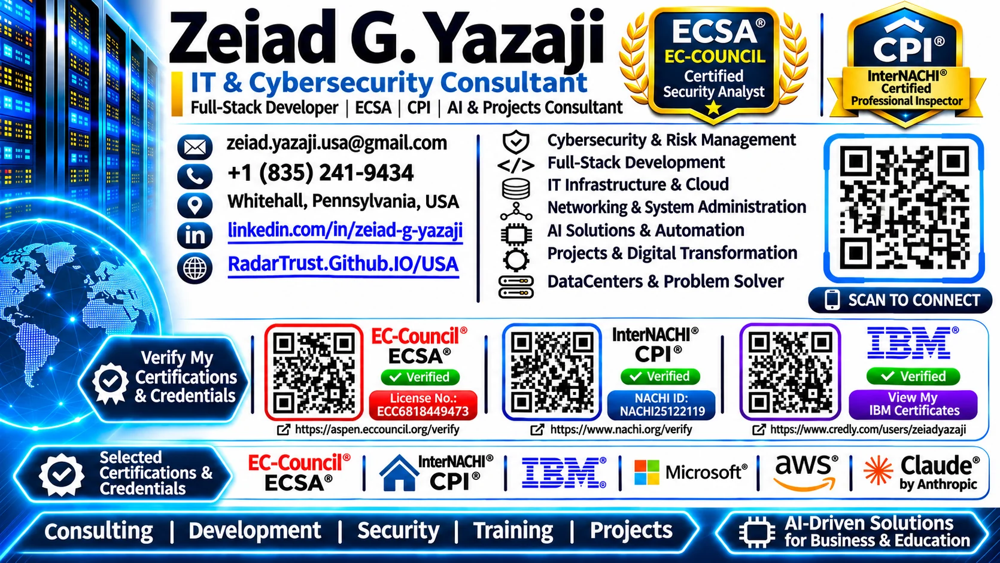

ERP, processes and integration
Business requirements, document workflows, materials records, relational information systems, software development, rollout support and user training.
I'm Zeiad G. Yazaji, an Electronics & Communications Engineer and IT Infrastructure & Cybersecurity Consultant with over 20 years of international experience connecting enterprise technology, software and engineering operations.

Explore my professional business card and original credential verification references.

My background spans electrical and electronic systems, enterprise applications, multi-branch IT operations, industrial automation and cybersecurity. The goal is consistent: understand the business workflow, engineer an appropriate solution, validate it, and help teams operate it effectively.
Business requirements, document workflows, materials records, relational information systems, software development, rollout support and user training.
Electrical panel documentation and testing, industrial control and automation activities, commissioning coordination and technical troubleshooting.
Enterprise infrastructure strategy, servers, data-center environments, resilient technology operations and practical cybersecurity controls.
The engagements below are drawn from the professional résumé and summarized without disclosing confidential architecture, invented project metrics or unsupported claims.
Supported ERP and bill-of-material workflows alongside PPL-related electrical panel, SCADA, wiring, inspection, testing, troubleshooting and commissioning work.
Led enterprise IT, cybersecurity, ERP, database and infrastructure activities, including data-center installations involving server and UPS environments.
Managed multi-branch technology systems and Cosmos / Transtek ERP processes, with software analysis, programming, implementation documentation and user training.
Earlier roles included Siemens S7-400 SCADA-based systems, industrial facilities and fuel-station automation, CCTV/NVR/VMS installations, banking systems technology and independent consulting/training.
ERP projects succeed when business process, data flow, security and user adoption are designed together. My approach makes these elements explicit rather than treating software deployment as the finish line.
Translate operational needs into implementation requirements, change controls, acceptance criteria and practical documentation.
Consider access control, reliability, separation of duties, backups and security implications throughout the lifecycle.
Support maintainable handoffs, meaningful user training and clear operational ownership, not simply technical go-live.